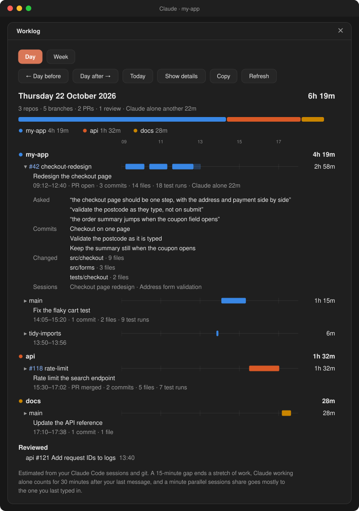
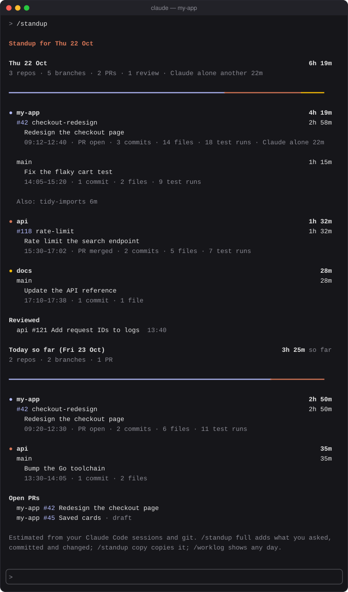
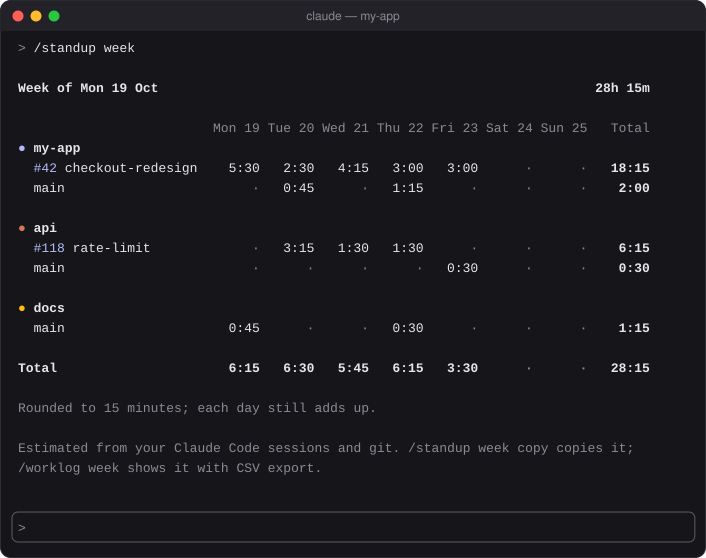

Every repo, by PR then branch
Sessions in any repo on your machine, worktrees counted toward their main checkout. Each PR or branch gets a one-line headline (the PR's title, else the session's name) and a line of counts: commits, files, test runs.
A mod for Claude Code
worklog reads the sessions you've already had and your repos' git, and lays out your work day by day: every repo, grouped by PR and branch, with the time spent. Type /standup before the meeting; type /worklog week when the timesheet is due.


You did the work in Claude Code, so Claude Code already knows what it was. worklog turns its logs into the answer for standup and the hours for your timesheet.
Sessions in any repo on your machine, worktrees counted toward their main checkout. Each PR or branch gets a one-line headline (the PR's title, else the session's name) and a line of counts: commits, files, test runs.
A minute two sessions share goes mostly to the one you were typing in, so a day's branches add up to the time you were actually at it. Claude working alone past 30 minutes is shown apart, not added to your day.
Commits and branch switches you make by hand, outside Claude, count as your work. With gh signed in, PRs get GitHub's titles and states, and a standup ends with the PRs you reviewed and the ones still open.
A row per branch, a column per day, rounded to 15 minutes with each day still adding up. Copy it as a table or CSV, or save the CSV.
In the desktop app the day is split by repo in one bar and each branch gets a timeline of its stretches. In the terminal the same is drawn in your theme's colors with block characters.
It reads the logs Claude Code already keeps and your repos' git, and shows you what it finds when you ask. Nothing is posted anywhere, and nothing is summarised by a model. Finished days are archived, so last month still adds up.
On Monday, /standup covers Friday and anything you did at the weekend. When the week's hours are due, it's a timesheet.

In a Claude Code terminal session, type this at the prompt:
/plugin install worklog --marketplace aseem-upadhyay/qol-mods
Answer y to add the marketplace, then pick the user scope so worklog loads in every session.
That's it. It reads the logs you already have, so /standup works straight away, back as far as Claude Code has kept them.
Needs macOS or Linux and python3 3.9 or newer. gh, signed in, adds PR titles, states, reviews and open PRs. Windows isn't supported yet.